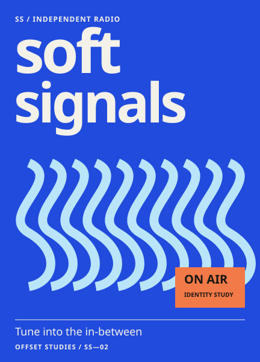
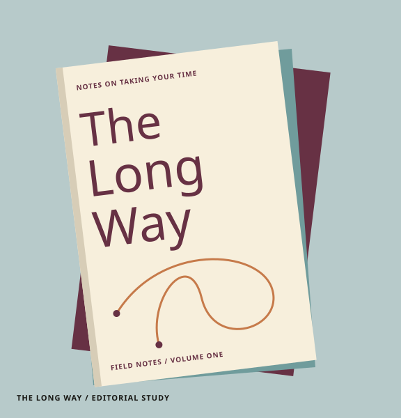
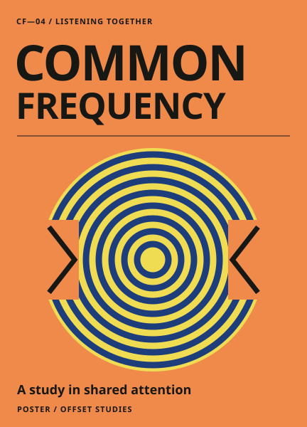
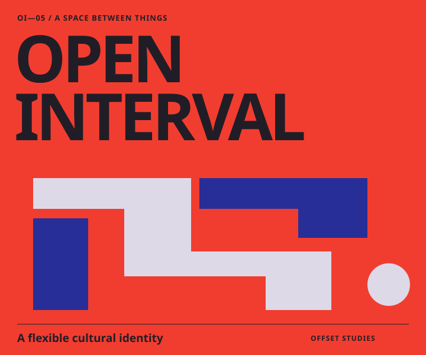
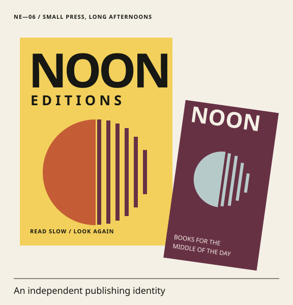

Offsite
Poster series Study 01
Selected work Six self-initiated studies
Poster series Study 01

Identity system Study 02

Editorial design Study 03

Poster series Study 04

Identity system Study 05

Identity & print Study 06
01 / Studio
Offset is a fictional studio exploring how type, color and simple systems give an idea a recognisable shape. These six self-initiated studies move from loud posters to quieter print.